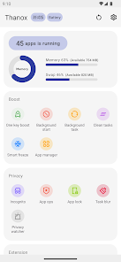
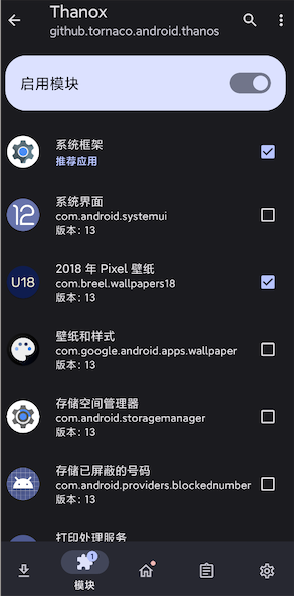

Thanox 上手体验：给你的 Android 装个"全自动管家"
折腾 Android 多年，终于遇到 Thanox 这样能把后台清理、广告跳过、隐私隐匿一锅端的神器。上手一周的真实感受分享。
为什么我会装 Thanox
老实说，我以前对这类"系统工具"一直是半信半疑的态度。从绿守卫到黑域再到各种冰箱，装了卸、卸了装，总觉得要么功能太单一，要么配置太折腾，用不了两三天就吃灰了。
但这次不一样。起因是上个月换了台国产 ROM 的新手机，预装 app 多到离谱，每个都想在后台占个位子，息屏一晚上能吃掉 15% 的电。更烦的是开屏广告——不是那种"等三秒跳过"的，是那种跳过按钮藏在右上角灰色小字体里的，每次点开都要摸半天。
后来在酷安刷到有人推荐 Thanox——去Thanox官网看了一眼介绍，说它是基于 Xposed 的"全自动管家"，能自动清后台、跳过广告、还能伪装设备信息。我抱着试试看的心态从官方下载拿了安装包装了，结果一用就是一个星期没卸。
初印象：比想象中复杂，但核心功能不难找
Thanox 的界面说实话有点"工程师风格"——首页能看到运行时清理、情景模式、隐私隐匿、Smart Freeze 这几个大模块，但点进去之后每个模块下面又有一堆子选项。第一次打开的时候我差点在设置里迷路。
不过好消息是，最常用的功能其实都在首页和一级菜单。息屏清理后台、一键加速、跳过广告这些高频操作，配置一次之后就不用管了，日常使用完全无感。

核心功能体验：三个最能打的场景
场景一：息屏自动清后台——终于不用手动划任务了
这是我用得最多也最依赖的功能。Thanox 的后台运行管理逻辑很简单：默认所有 app 都允许后台运行，你手动关掉那些不需要常驻的。关掉之后，一旦屏幕熄灭过了延迟时间，Thanox 就会 forceStopPackage 把这些 app 彻底杀掉——进程、服务、后台活动全停。
我把计算器、文件管理器、偶尔玩的几个游戏、还有一堆预装但从来不用的系统应用的后台开关全关了，延迟设成 30 秒。结果就是：息屏一晚上的电量消耗从 15% 掉到 2% 以内。这个变化是立竿见影的。
当然也有踩坑的时候。一开始我把网易云音乐也关了后台，结果熄屏听了两首歌就断了——后来才知道 Thanox 对正在播放音频的 app 默认有保护，但我那次可能是触发了某个边界情况。现在音乐、微信、QQ 这些需要长连接的我都保持开着，只杀那些"醒着也没用"的。
场景二：跳过开屏广告——情景模式的威力初见端倪
Thanox 真正让我觉得"值了"的是情景模式。这个功能的核心是一套规则引擎——你写一段类似 activityResumed == true && componentNameAsShortString == "com.nowcasting.activity/.SplashActivity" 的条件，然后配一个 ui.findAndClickViewByText("跳过", "...") 的动作，Thanox 就会在你打开彩云天气的时候自动帮你点跳过。
听起来很技术，我一开始也懵——后来去Thanox文档翻了一下才找到套路：
- 先装 Thanox 自带的"显示当前 Activity"浮窗，打开有广告的 app，记下广告页的组件名
- 去 Thanox 情景模式里新建规则，把条件和动作填上
- 加个 500ms 的延迟等广告页完全渲染
我现在给手机上六七个有开屏广告的 app 都配了规则，再也不用手点跳过了。
场景三：身份隐匿——给 app 一套假身份
这个功能我是用来对付那些"必须读取设备标识才能用"的测试环境的。Thanox 在 Framework 层 hook 了 getDeviceId()、getImei()、getSimSerialNumber() 这些 API——某个 app 来问"你设备号是多少"的时候，Thanox 会返回你提前配好的虚拟数据，而不是真实的 IMEI。

配一套模板大概需要五分钟：新建模板、填虚拟的 IMEI（得符合 TAC 规则）、Android ID、ICCID，然后把模板分配给指定的 app。我现在给工作测试用的那几个 app 单独配了一个模板，和个人 app 完全隔离——工作环境想怎么造都不影响手机本身的身份信息。
适合谁？不适合谁？
Thanox 不是给所有人准备的。
如果你：
- 不想折腾 root / Xposed，想要"一键自动"的体验 → 你适合 Thanox
- 对 Android 底层有基本了解，愿意花一两个小时配置规则 → 你会越用越爽
- 在意隐私、想给不同 app 隔离身份 → 这是 Thanox 的强项
但如果你：
- 连"Xposed 是什么"都不知道，完全不想配置任何东西 → Thanox 可能会让你觉得太复杂
- 只用系统自带的清理，觉得够了 → 没必要折腾
- 特别怕"给系统加东西会出问题" → 虽然 Thanox 很稳，但心理上过不去的话还是别碰
一句话总结
Thanox 给我的感觉是：它不是一个"清理工具"，而是一个可编程的系统管家。后台清理、广告跳过、隐私隐匿——这些都是它的"能力"，而情景模式是它的"大脑"，让你能把这些能力组合成自动化规则。
如果你愿意花点时间上手配置，Thanox 能给你一种"手机终于听话了"的满足感。
相关的源码和规则案例我在三个平台都放了一份——GitHub那份维护最全，Gitee国内访问更快，GitCode做了额外的分类整理，挑你顺手的拿就行。